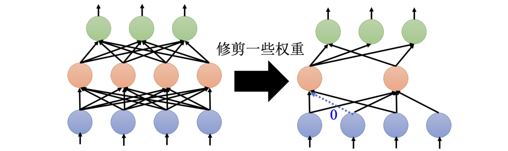
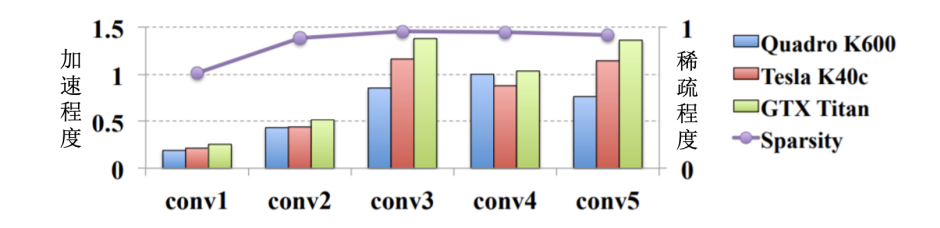
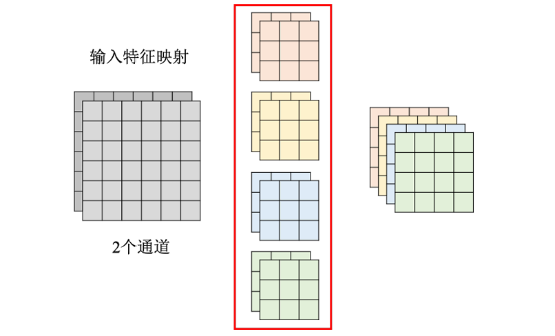
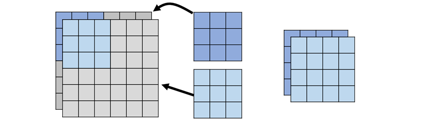
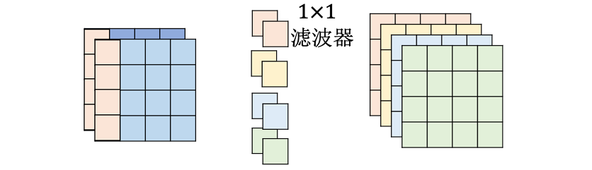
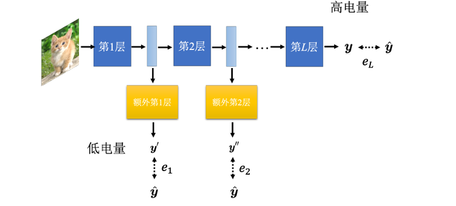
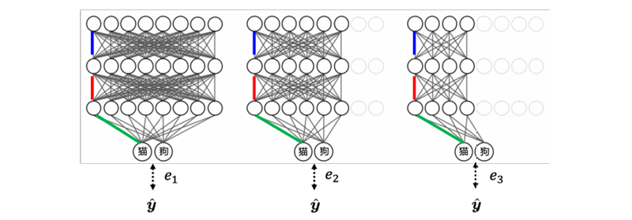

Chapter17. Network Compression¶
网络压缩（Network Compression）关注的问题是：
- 能不能把很大的模型变小
- 能不能减少参数量、计算量和存储空间
- 能不能在模型变小后，仍然保持接近原模型的性能
这类技术在大模型和边缘设备中尤其重要。例如 BERT、GPT 这类模型参数量巨大，如果直接部署到智能手表、手机、车载设备等 edge device 上，通常会遇到：
- 内存不够
- 计算力不足
- 推理延迟过高
- 电量消耗过大
Why Edge Inference?
为什么不把数据传到云端，让云端模型推理后再传回设备？
主要有两个原因：
- 延迟（latency）：自驾车、实时语音交互等任务不能等待云端往返
- 隐私（privacy）：手表、手机、医疗设备上的数据可能不适合传到云端
本章主要介绍五种偏软件层面的网络压缩方法：
- Network Pruning
- Knowledge Distillation
- Parameter Quantization
- Network Architecture Design
- Dynamic Computation
17.1 Network Pruning¶
网络剪枝（network pruning） 的想法是：大网络中很多参数或神经元可能没有真正发挥作用，可以把这些“不重要”的部分剪掉。
剪枝的基本流程：
- 先训练一个大的网络，衡量每个参数、神经元或通道的重要性
- 删除不重要的部分，对剩下的小网络做 fine-tuning
- 重复剪枝和微调，直到网络足够小
Evaluation¶
剪枝的关键问题是：怎么判断某个参数或神经元重不重要？
常见直觉包括：
- 参数绝对值：\(|w|\) 越小，可能越不重要
- 神经元激活频率：输出长期接近 0 的神经元可能不重要
- 对 loss 的影响：移除后 loss 上升越小，说明越不重要
- 梯度或敏感度：参数变化对输出或损失影响越小，越适合剪掉
最简单的方法是按参数绝对值排序，然后剪掉绝对值最小的一部分参数。
Pruning¶
通常一般不会一次性剪掉大量参数，而是采用迭代式剪枝：
- 剪掉一小部分参数，例如 10%
- 微调剩余网络，让准确率恢复
- 重复第一步和第二步
这样做的原因是：一次剪太多会让模型性能大幅崩掉，微调可能无法恢复，逐步剪枝更容易找到一个性能和大小之间的平衡
Weight & Neuron Pruning¶
剪枝可以按不同粒度进行，最常见的是：
- 权重剪枝（weight pruning）
- 神经元 / 通道剪枝（neuron or channel pruning）
权重剪枝以单个参数为单位，如果某个权重不重要，就把它剪掉，常见做法是把该权重设为 0，这样可以剪掉非常多参数，并且疏程度（sparsity）可以很高。

Bug
- 网络形状会变得不规则
- 不规则稀疏结构在 PyTorch / GPU 上不一定好加速
- 即使 95% 参数变成 0，也可能没有明显推理加速

Lottery Ticket Hypothesis¶
一个自然的问题是：既然最后要小网络，为什么不一开始就训练小网络？
常见观察是：
- 直接训练小网络，效果往往不如“大网络训练后剪枝得到的小网络”
- 大网络更容易被优化
- 大网络中可能包含一些“容易训练的子网络”
彩票假说（Lottery Ticket Hypothesis） 用来解释为什么大网络更容易训练。
- 一个大网络可以看作很多子网络的组合
- 每个子网络都有自己的初始化参数
- 其中少数子网络抽到了“幸运初始化”
- 只要有一个幸运子网络能训练好，大网络就能表现好
What Makes a Ticket Good?¶
后续研究发现，好的初始化可能不只是数值大小本身，参数的正负号更重要。
- 例如，剪枝后留下的原始初始化参数为：\(0.9,\ 3.1,\ -9.1,\ 8.5\)
- 有研究发现，只保留符号也可能训练得起来：\(+\alpha,\ +\alpha,\ -\alpha,\ +\alpha\)
这说明在某些情况下参数符号可能携带重要结构信息，精确数值未必是最关键的
Controversy¶
彩票假说很有影响力，但并不是完全定论。
也有研究指出：
- 直接训练小网络有时也能达到剪枝网络的效果
- 彩票假说现象可能依赖学习率、剪枝方式和具体任务
- 在较大学习率或结构化剪枝下，现象可能不明显
Tip
对彩票假说的稳妥理解是：它提供了一种解释大网络可训练性的视角，但不能简单当成所有剪枝现象的唯一原因。
17.2 Knowledge Distillation¶
知识蒸馏（knowledge distillation） 的目标是：让小模型学习大模型的行为。
- 大模型称为 Teacher Network
- 小模型称为 Student Network
基本流程：
- 先训练一个性能好的 teacher
- 把训练数据输入 teacher，得到 teacher 的输出分布
- 用 teacher 的输出分布作为训练目标
- 训练 student 去模仿 teacher
Why Distillation Works¶
普通监督学习使用 hard label：
例如一张图片是数字 1，普通训练会告诉模型：
- 数字 1 的概率应该是 1，其他类别概率都应该是 0
知识蒸馏使用 teacher 给出的 soft label：
这类 soft label 包含更多信息：
- 哪些类别最可能，哪些错误类别与正确类别相似，teacher 对不同类别的相对判断
Example
对一张像“1”的图片，teacher 可能输出：1：0.7、7：0.2、9：0.1
这告诉 student：这张图主要像 1，但也有点像 7 和 9。这个信息比“答案就是 1”更有效。
知识蒸馏有用的原因：
- teacher 的输出分布提供了类别间关系
- student 学到的不只是标签，而是 teacher 的判断方式
- 对小模型来说，soft target 往往比 hard target 更容易学习
如果 teacher 是多个模型的集成，也可以把集成输出作为蒸馏目标：
- 训练多个模型
- 平均它们的输出
- 让一个 student 模仿这个平均输出
这样可以把 ensemble 的效果压缩进一个小模型中。
Temperature Softmax¶
蒸馏时常用一个技巧：在 Softmax 中加入 温度（temperature），具体公式如下：
- 当 \(T>1\) 时，输出分布会更平滑，原本接近 0 的类别也会得到一些概率，类别之间的相似性信息更容易被 student 学到
Warning
温度不能无限大。如果 \(T\) 太大，所有类别概率会过于接近，student 反而学不到有效区分信息。
Distillation Loss¶
实际训练中，student 可以同时学习 hard label 和 teacher soft label：
其中：
- \(L_{\text{hard}}\)：student 与真实标签之间的交叉熵
- \(L_{\text{soft}}\)：student 与 teacher 输出分布之间的距离
- \(\alpha\)：控制两者权重
常见的 soft loss 可以用 KL divergence：
也可以不只模仿最终输出，而是模仿中间层表示：
- student 的第 3 层模仿 teacher 的第 6 层
- student 的第 6 层模仿 teacher 的第 12 层
这类做法可以给 student 更多训练信号。
17.3 Parameter Quantization¶
参数量化（parameter quantization） 的目标是：用更少的 bit 存储参数。
- 常规模型可能采用 FP32（32-bit 存一个参数）或者 FP16（16-bit 存一个参数），但是通过量化后可以使用：INT8（8-bit）、INT4（4-bit ）以及，Binary（1-bit）。这样的方式对模型性能没有明显损耗，有时还能防止过拟合。
Weight Clustering¶
权重聚类（weight clustering）是更进一步的压缩方法
- 把所有权重按数值分成若干群
- 每一群用一个代表值表示
- 每个参数只需要记录自己属于哪一群
例如把参数分成 4 群：
- group 0：代表值 \(-0.4\)
- group 1：代表值 \(0.1\)
- group 2：代表值 \(0.6\)
- group 3：代表值 \(1.2\)
此时每个参数只需要存一个 group id
Huffman Encoding¶
权重聚类后，还可以用哈夫曼编码（Huffman encoding）进一步压缩
- 出现频率高的符号，用短编码
- 出现频率低的符号，用长编码
如果某些 group 出现特别频繁，哈夫曼编码可以进一步减少平均 bit 数
Binary Weight¶
极端情况下，可以让权重只有两种取值：
- 这种模型也被称为 binary weight network binary network binarized neural network
- 此时每个权重存储只需要 1 bit
二值网络的存储极小，某些运算可以用位运算加速，而且由于模型容量受限，可能有一定正则化效果。但同时模型的表达能力受到强限制，训练通常更困难，并非所有任务都能保持性能。
17.4 Network Architecture Design¶
另一类压缩思路是：从网络架构本身减少参数量。
Standard Convolution¶
假设卷积层输入有 \(I\) 个通道，输出有 \(O\) 个通道，卷积核大小为 \(k\times k\)。
- 标准卷积中每个 filter 的大小是 \(k\times k\times I\)，一共有 \(O\) 个 filter
- 因此参数量为：\(k\times k\times I\times O\)

Depthwise Separable Convolution¶
深度可分离卷积（depthwise separable convolution） 把标准卷积分成两步：
- Depthwise Convolution
- Pointwise Convolution
Depthwise Convolution¶

深度卷积中：输入有几个 channel，就有几个 filter，每个 filter 只处理一个 channel
- 如果输入有 \(I\) 个通道，卷积核大小为 \(k\times k\)，参数量为 \(k\times k\times I\)
- 缺点是：无法获得跨通道的信息之间的关系
Pointwise Convolution¶

点卷积使用 \(1\times1\) 卷积来混合通道信息
- 如果输入有 \(I\) 个通道，输出有 \(O\) 个通道，则参数量为 \(I\times O\)
- 因此深度可分离卷积总参数量为：\(k\times k\times I+I\times O\)
Parameter Ratio¶
和标准卷积相比，参数比例为：
当 \(O\) 很大时，\(\frac{1}{O}\) 可以忽略，主要约为：
- 若 \(k=3\)，参数量约变成原来的 \(\dfrac{1}{9}\)
- 若 \(k=2\)，参数量约变成原来的 \(\dfrac{1}{4}\)
Info
Depthwise convolution 负责同一通道内的空间模式，pointwise convolution 负责跨通道的信息整合。
Low-rank Approximation¶
低秩近似（low-rank approximation）也是通过“把一层拆成两层”来减少参数。
假设原本有一层全连接网络，其输入维度为 \(N\)，输出维度为 \(M\)，那么它的参数量为 \(M\times N\)
- 在 \(N\) 和 \(M\) 中间插入一个维度为 \(K\) 的线性层，不加激活函数
- 第一层是 \(N×K\)，第二层是 \(K×M\)，参数量变为 \(K\times (M+N)\)
- 本质上是把 \(W\approx UV\)，但 \(W\) 的表达能力被限制在较低秩的结构里，不再能表示任意矩阵
17.5 Dynamic Computation¶
前几种方法是把网络固定地变小，动态计算（dynamic computation） 的目标不同：
- 让同一个网络根据设备资源或样本难度，动态决定使用多少计算量。
这样做动机如下：
- 不同设备资源不同：手表、手机、服务器计算能力不同，希望同一个模型能适应不同资源环境
- 同一设备状态不同：例如手机电量充足时可以多算，手机快没电时可以少算
- 不同样本难度不同：简单样本不需要跑完整个深网络；困难样本需要更多层、更宽网络或更多计算
Dynamic Depth¶
让网络可以提前输出结果，做法如下：
- 在中间层后面接上额外分类器
- 每一层都可以产生一个预测结果
- 简单样本可以早停，困难样本继续往后跑

- 训练时，可以让每个出口都接近真实标签：\(L=e_1+e_2+\cdots+e_L\)
- 其中 \(e_i\) 表示第 \(i\) 个出口输出与标准答案的交叉熵，\(L\) 代表出口数量或层数
- 推理时：
- 如果前面出口已经足够有信心，就提前输出
- 如果不确定，就继续计算后续层
Dynamic Width¶
动态宽度（dynamic width） 让同一个网络使用不同数量的神经元或通道。
例如一个网络可以支持 100% 宽度，75% 宽度，以及 50% 宽度

这些不是三个完全独立的网络，而是共享权重的同一个网络：
- 宽网络使用所有通道；窄网络只使用前一部分通道
训练时，可以让不同宽度都输出结果，并把所有损失加起来：\(L=e_1+e_2+e_3\) - 这样同一个模型可以在不同计算预算下运行。
17.6 Summary¶
本章介绍的方法并不互斥，实际压缩模型时常常组合使用：
- 先设计轻量架构，例如 depthwise separable convolution
- 用大模型对小模型做 knowledge distillation
- 对训练好的小模型做 pruning
- 对剪枝后的模型做 quantization
- 部署时加入 dynamic computation
不同方法解决的问题略有不同：
| 方法 | 主要减少 | 关键思想 | 风险 |
|---|---|---|---|
| Pruning | 参数量 / 计算量 | 删除不重要参数或结构 | 非结构化剪枝不一定加速 |
| Distillation | 模型规模 | 小模型模仿大模型 | teacher 错误也会被学到 |
| Quantization | 存储 / 计算精度 | 用更少 bit 表示参数 | 量化误差 |
| Architecture Design | 参数量 / FLOPs | 从结构上减少冗余 | 表达能力受限 |
| Dynamic Computation | 平均计算量 | 简单样本少算，困难样本多算 | 训练和部署更复杂 |